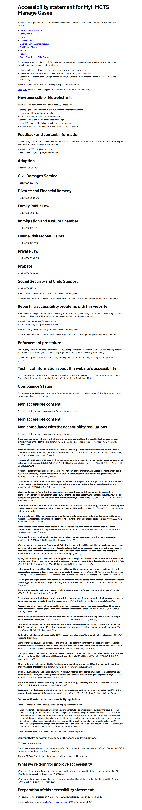

Automated heuristics support investigation; they do not replace screen-reader testing or establish WCAG conformance.
View page screenshot

No screen-reader-like issues found
No issues were found by the static heuristics for naming, landmarks, template structure, or recorded announcement contracts. Potential focus targets are listed in DOM order; this lane does not observe keyboard traversal or spoken output.